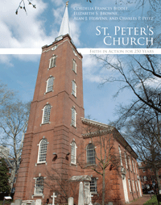

<body bgcolor="#FFFFFF" text="#000000" link="#0000FF" vlink="#CC0000" alink="#CC0000"><center><hr width="350" size="1" align="center" noshade>A history of the second-oldest Episcopal Church in Philadelphia, published in honor of its 250th anniversary<hr width="350" size="1" align="center" noshade><p><a href="https://cdcshoppingcart.uchicago.edu/Cart/ChicagoBook.aspx?ISBN=9781439907955&&PRESS=temple" target="_top">Buy this book!</a> | <a href="https://cdcshoppingcart.uchicago.edu/Cart/Cart.aspx?PRESS=temple" target="_top">View Cart</a> | <a href="https://cdcshoppingcart.uchicago.edu/Cart/Cart.aspx?PRESS=temple" target="_top">Check Out</a></p><p></p></center><!--none//--><h1>St. Peter's Church</h1>
<H2>Faith in Action for 250 Years</H2>
<h3>Cordelia Frances Biddle, Elizabeth S. Browne, Alan J. Heavens and Charles P. Peitz</h3>
<P>cloth 1-43990-795-1 $40.50, Oct 11, <FONT COLOR=#990033>Available</FONT>
<br>Electronic Book 1-43990-797-8 $39.50 <FONT COLOR=#990033>Available</FONT>
<BR> 272 pp
8x10
125&nbsp;color&nbsp;illustrations
</P><h3 align="center"><P><font color="#996633">Laurence D. Fish Award for Outstanding Parish History from the National Episcopal Historians and Archivists,
2014</font></P>
</H3>
<BLOCKQUOTE><I>"This is the most beautifully presented church history I have ever seen. The author team skillfully weaves together many strands of a venerable Philadelphia church: the architectural history of St. Peter's; the troubled times that divided the church during the American Revolution and Civil War; the outreach mission efforts, mostly by female parishioners, when the church was surrounded by the struggling poor of the late nineteenth century; and the stirring rebirth of the church in recent decades after it almost closed its doors. Utterly frank in discussing the church's low points as well as high points, it is a fascinating exploration of one of Philadelphia's treasures."</I><br>&#151<b>Gary B. Nash</b>, Professor of History Emeritus and Director, National Center for History in the Schools, UCLA</I></BLOCKQUOTE>
<P>For 250 years, St. Peter's Episcopal Church has witnessed a rich mixture of people and events that reflect America's history. Nestled in Society Hill, one of Philadelphia's oldest neighborhoods, its congregants span the centuries. George Washington worshipped here as did many other national figures. Patriots and Tories, Abolitionists and slaveholders, Whigs, Democrats, and Republicans all occupied its pews. And over the years St. Peter's was an important point of first contact for countless immigrants as the church provided basic services to help them acculturate to life in Philadelphia.
<P>Opening a window onto Philadelphia’s—and the nation's—history, <I>St. Peter's Church</I> is a glorious testament to this National Historic Landmark. In addition to the stories and a hundred plus black-and-white and color photographs, this handsome volume provides a history of the grounds, the churchyard, and the church itself—a classic example of eighteenth-century Philadelphia design that later incorporated the work of renowned architects William Strickland, Thomas U. Walter, and Frank Furness.
<BR>&nbsp;<h2>Reviews</h2>
<p><i>"This is a charming and informative book, complete with great shots of Society Hill in its less tony days."</i><br>&#151<b><i> The Philadelphia Inquirer</i></b>
<p><i>"[W]ritten by knowledgeable people who did their research and are a part of this church...it includes many beautiful photos and design elements."</i><br>&#151<b><i> Episcopal Journal</i></b>
<BR>&nbsp;<h2>Contents</h2><P>
<p>Foreword, by the Reverend Ledlie I. Laughlin, Twentieth Rector, St. Peter’s Church
<br>Preface</p>
<p><b>1761-1836</b>
<br>1. Let the Building Speak &bull; <i>Elizabeth S. Browne</i>
<br>Martin Jugiez &bull; <i>Kenneth Finkel</i>
<br>2. The Sacred Cause of Liberty &bull; <i>Elizabeth S. Browne</i>
<br>A St. Peter’s Continuum &bull; <i>Elizabeth S. Browne</i></p>
<p><b>1836-1865</b>
<br>3. The Churches Disunited &bull; <i>Alan J. Heavens and Elizabeth S. Browne</i>
<br>4. The Building Evolves &bull; <i>Elizabeth S. Browne</i>
<br>5. The Industrial City: 1836-1845 &bull; <i>Cordelia Frances Biddle</i>
<br>6. St. Peter's and the Oxford Movement &bull; <i>Alan J. Heavens</i>
<br>7. Civil War Divides the City &bull; <i>Cordelia Frances Biddle</i></p>
<p><b>1865-1911</b>
<br>8. St. Peter's Reaches Out &bull; <i>Alan J. Heavens and Cordelia Frances Biddle</i>
<br>Outreach of an Earlier Age &bull; <i>Alan J. Heavens</i>
<br>9. From a Side Pew: Meditiations on the "Saints" &bull; <i>George E. Thomas</i>
<br>10. The Jewish Mission: The Reverend Andrew Weinstein &bull; <i>Alan J. Heavens</i></p>
<p><b>1911-Present</b>
<br>11."No Longer a Wealthy Parish" &bull; <i>Alan J. Heavens</i>
<br>12. The Choir School: The Gilbert Years &bull; <i>David Richards</i>
<br>The Choir Post-Gilbert &bull; <i>Elizabeth S. Browne</i>
<br>13. 1950-1962: Transition and Renewal &bull; <i>Marcia Rogers</i>
<br>14. The ’70s and Beyond: “Behold, I Make All Things New” &bull; <i>Alan J. Heavens</i>
<br>Sally Buell &bull; <i>Cordelia Frances Biddle</i>
<br>Celebrating the 250th &bull; <i>Elizabeth S. Browne</i></p>
<p><b>The People of St. Peter's</b>
<br>15. The Churchyard &bull; <i>David Stevens</i>
<br>High Up, the Man in Black &bull; <i>Alan J. Heavens</i>
<br>16. The Rectors of St. Peter's Church &bull; <i>Alan J. Heavens</i>
<br>17. Members of the Congregation &bull; <i>Alan J. Heavens</i>
<br>18. "A House of Prayer for All People" &bull; <i>Alan J. Heavens</i></p>
<p>Sources
<br>Index</p>
</P><BR>&nbsp;<H2>About the Author(s)</H2>
<P><b>Cordelia Frances Biddle</b> is the author of the historical novels: <i>The Conjurer</i>, <i>Deception’s Daughter</i>, <i>Without Fear</i>, and<i> Beneath the Wind</i>. She is a direct descendant of Nicholas Biddle.</P>
<P><b>Elizabeth S. Browne</b>, a tour guide, tour writer and designer and guide trainer, is a long-time member of St. Peter's Church.</P>
<P><b>Alan J. Heavens</b> is a veteran newspaper columnist and editor at <i>The Philadelphia Inquirer</i>. He is the author of <i>What No One Ever Tells You About Renovating Your Home</i> and <i>Remodeling on the Money</i>.</P>
<P><b>Charles P. Peitz</b> is a freelance editor formerly with <i>The Philadelphia Inquirer</i> and <i>The Wall Street Journal</i>.</P>
<BR><H2>Subject Categories</H2>
<p><A HREF="/tempress/philly.html" TARGET="_top">Philadelphia Region</a>
<BR><A HREF="/tempress/history.html" TARGET="_top">History</a>
<BR><A HREF="/tempress/religion.html" TARGET="_top">Religion</a>
</p>
<p align="center"><a href="https://cdcshoppingcart.uchicago.edu/Cart/ChicagoBook.aspx?ISBN=9781439907955&&PRESS=temple" target="_top">Buy this book!</a> | <a href="https://cdcshoppingcart.uchicago.edu/Cart/Cart.aspx?PRESS=temple" target="_top">View Cart</a> | <a href="https://cdcshoppingcart.uchicago.edu/Cart/Cart.aspx?PRESS=temple" target="_top">Check Out</a></p><p><font face="Arial" size="1"><a href="copyright.html" onMouseOver="window.status='Web Copyright Policy';return true;" onMouseOut="window.status=''" title="Web Copyright Policy">&copy;</a> 2015 <a href="http://www.temple.edu" target="new" onMouseOver="window.status='Link to Temple University home page';return true;" onMouseOut="window.status=''" title="Link to Temple University home page">Temple University</a>. All Rights Reserved. http://www.temple.edu/tempress/titles/2181_reg.html</font></p>